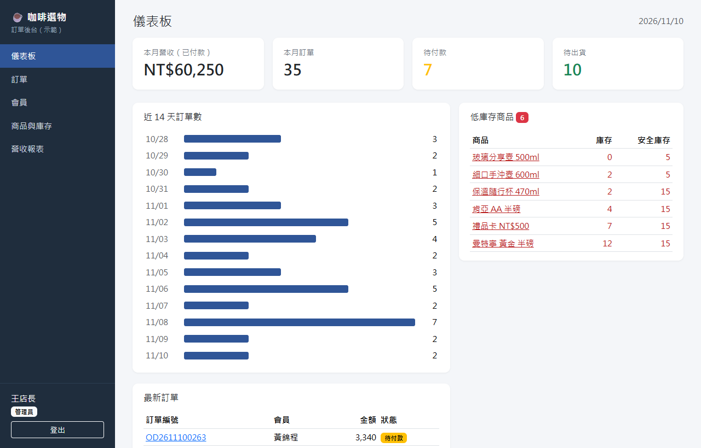
訂單後台＋綠界金流
小型電商的會員、商品庫存、訂單管理，串接綠界付款並驗證付款通知後自動更新訂單。
- 管理員／店員權限，伺服器端把關
- CheckMacValue 驗證、重複通知只處理一次
- 28 個自動化測試
先了解你現在怎麼做，再決定要自動化哪一段，不做用不到的功能。
都是可以實際執行的示範專案，資料為虛構，程式碼公開在 GitHub。

小型電商的會員、商品庫存、訂單管理，串接綠界付款並驗證付款通知後自動更新訂單。
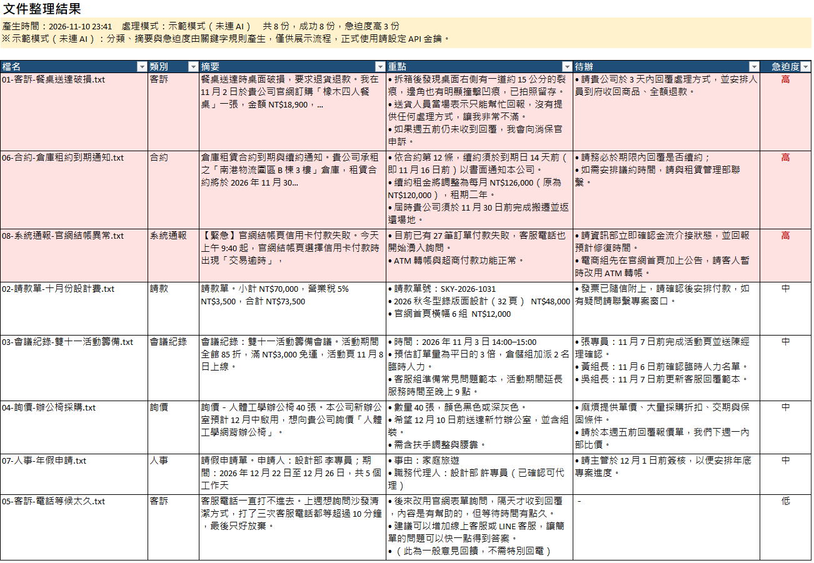
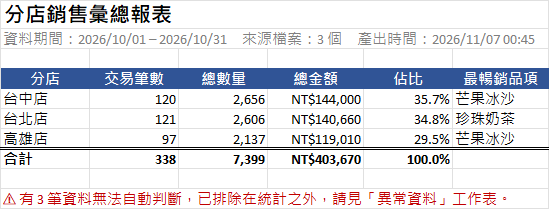
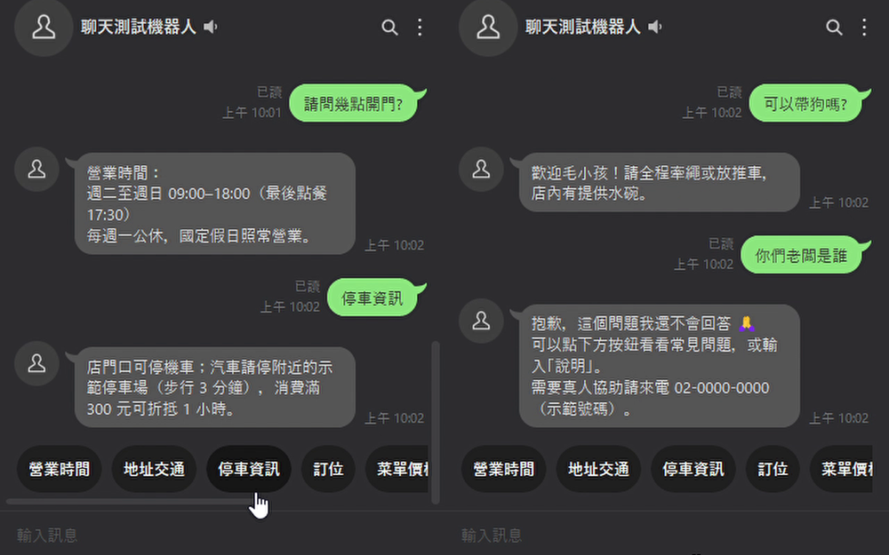
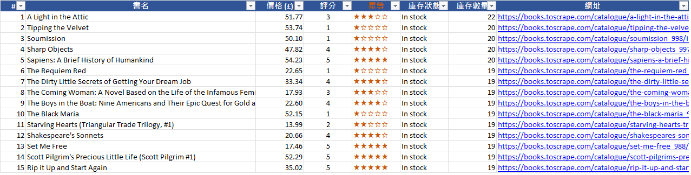
把多年金流、會員、風控與客服系統的實務經驗，重新實作成可公開的專案：資料為虛構，全部附自動化測試、GitHub Actions CI 與中英文說明。
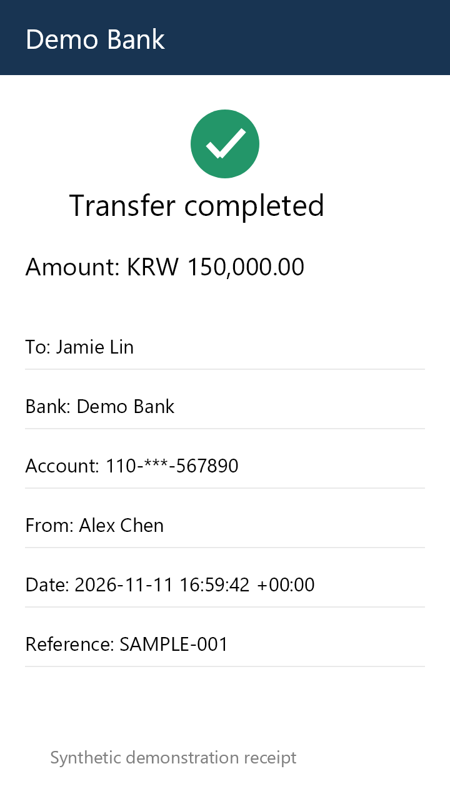
上傳網銀轉帳截圖或錄影，自動擷取金額、帳號、姓名並與訂單比對，不符時自動開爭議單。
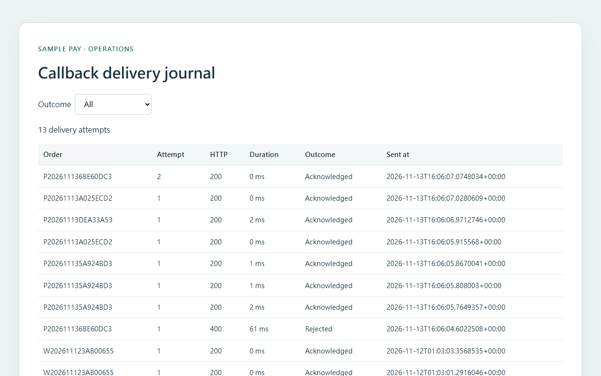
模擬代收、代付與非同步回呼，可注入延遲、重複、亂序、壞簽章，讓金流串接在上線前就被測透。
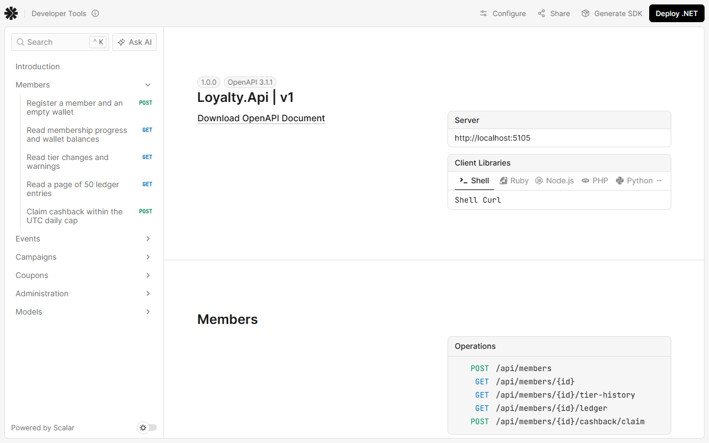
會員等級、即時回饋金、排行榜活動與優惠券，重點在帳務一致性與高併發下的正確性。
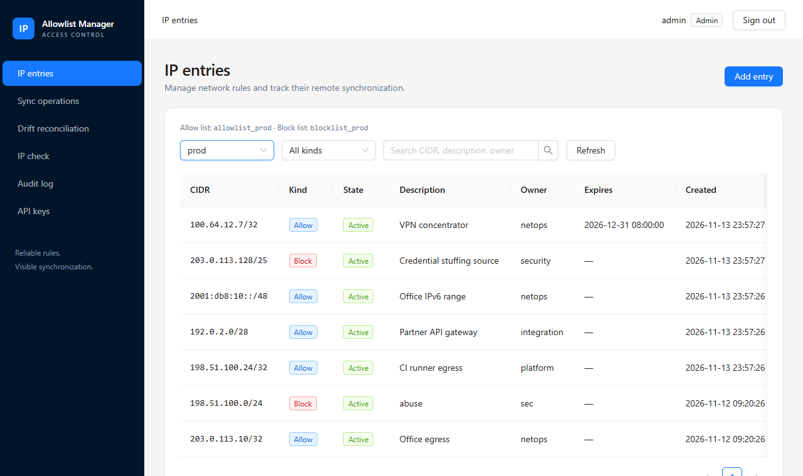
管理各環境的允許與封鎖 IP，透過 outbox 可靠同步到 Cloudflare Lists，並定期比對本地與遠端的漂移。
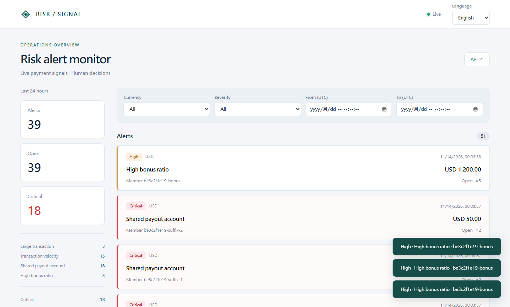
規則引擎偵測單筆大額、短時間高頻、多帳號共用收款帳戶等異常，即時推到看板並發送 Telegram 通知。
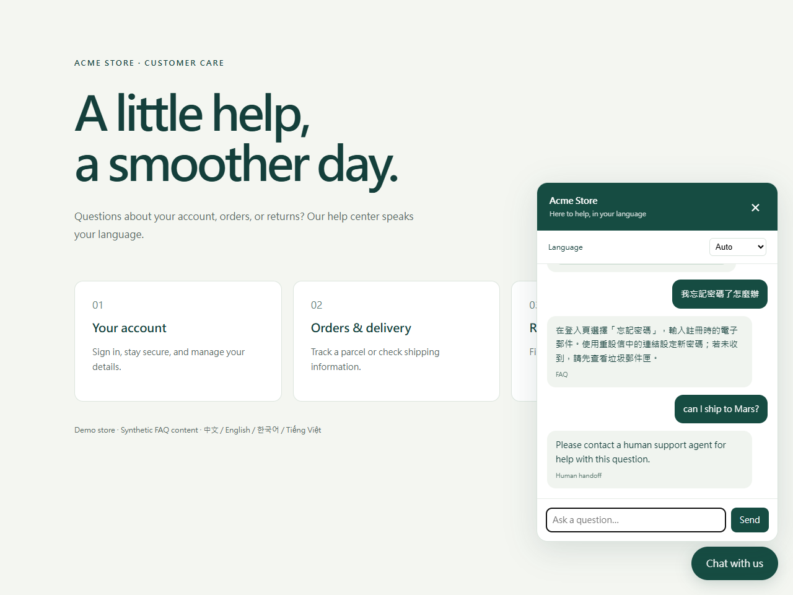
繁中、英、韓、越四語客服：先用本地檢索回答，信心不足才交給 LLM，而且只能依 FAQ 作答，答不出來就轉真人。
全程遠端，先小範圍做出可用的版本，再慢慢加功能。
提供範例（網址、Excel、目前的作法），個資請先去識別化。
說明可行性、做法、時程與費用，超出範圍會先說清楚。
先做一小部分給你確認方向，對了再完成全部。
交付程式與圖文說明，交付後提供免費修正期。